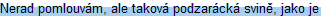
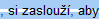

Barbora Světlíková - Ondřej Žižka
Barbora Světlíková
 Barbora Světlíková  měla stopy svého jednání aspoň na internetu. Zde je příběh její bývalé spolubydlící:
Barbora Světlíková je nebezpečná nízká udavačka. Já jsem její bývalá spolubydlící.
Minulý rok jsem měla komplikace ve škole a letos jsem nemohla dostat koleje. Proto jsem bydlela na jméno kamarádky, která chtěla bydlet u přítele a přenechala mi pokoj. Spolubydlící byla zmíněná Barbora Světlíková, studentka 4. ročníku Fakulty podnikatelské VUT v Brně.
Nejprve jsme neměli žádné problémy – uklízela jsem za ni celý pokoj, koupelnu, dávala jí různé drobnosti z práce, svoje jídlo… V čemkoli jsem se jí přizpůsobila, aby nám spolu bylo dobře.
Ale v jednom jsem neucouvla, a to byla teplota. Barbora Světlíková je pravý exot a potřebuje v pokoji 27 stupňů, čemuž říká trenková teplota. Když bylo na pokoji 24 stupňů, řikala tomu kompromis a nadávala, že mrzne. Problém jsem chtěla řešit – sehnala jsem si ubytování jinde a na pokoj měla jít oficiálně ubytovaná kamarádka.
A pak mě Barbora Světlíková jednoduše po estébácku udala. Šla na pokrytecké centrum Přes bloky a lhala. Lhala, že dělám bordel, lhala, že ji nechávám čekat čtvrt hodiny na chodbě, než může dovnitř, lhala, že na pokoji dělám takovou zimu, že má nemocné ledviny a musí brát antibiotika (z oněch 24 stupňů).
Ze dne na den mě KaM vyhodili na ulici, a kamarádce zrušili smlouvu. To Světlíková dobře věděla – byl to její záměr. Teď má pokoj pro sebe a udávání přišla na chuť: chce udat jiný pokoj, protože bydlí dva na jedno jméno. Na další studenty zas udává kvuli „hlasité hudbě“, která není přes zavřené dveře ani slyšet a při které jsem já bez problémů usnula.
Nevaruji jen studenty, kteří nebydlí na své jméno (a že takových je hodně), ale i jeji spolužáky a budoucí spolupracovníky – protože tahle její vlastnost se může projevit kdekoli. Udává anonymně, bez varování, a do poslední chvíle, než její udání praskne, se tváří jako vaše dobrá kamarádka a moc se diví, který hajzl vám to mohl udělat. Potom se vám doslova tváří v tvář vysměje. Zkrátka – davejte si na ni dobrý pozor, kdy vám vrazí kudlu do zad.
Barbora Světlíková se stala fenoménem a synonymem pro anonymní udavače po vzoru StB. Její sousedi se třesou strachy, kdy je udá, a ostatní také čekají, kdy si Barbora Světlíková půjde kvokat na Přes bloky, kde lže jak když tiskne, dělá ze sebe chudinku, a přitom je to přesně ten typ člověka, na kterých desítky let stál komunismus – udavačka, prospěchářka, sobecká mrcha, která naprosto nebere ohled na nikoho než na sebe.
Tímto poradenskému centru gratuluji k „úspěšně vyřešenému případu“, kdy ve spolupráci se zkaženou rozmazlenou fiflenou vyštípali z kolejí hodnou bezproblémovou holku, která se navíc měla za 14 dnů od podrazu, který na ni spolubydlící provedla, stěhovat jinam. Takže BS si vesele bydlí sama na dvoulůžáku, což byl její jediný cíl. Ostatním gratuluji k tomu, že ji neznáte.
Zdroj: Pozor na udavačku Barboru Světlíkovou
Tak to je docela zajímavý příběh. Myslel jsem, že takové „postavy“ se vyskytují jenom v Růžové Zahradě, ale jak je vidět, na svině, které udají spolubydlící a bez varování je vyhodí na ulici, narazíte i v reálu. Proto pozor na vaši Barboru Světlíkovou – dost možná nějakou kolem sebe máte.
//Poznámka:// Tato story je zcela fiktivní a nemá nic společného se skutečnou Bárou Světlíkovou ze Šumperka, studentkou Fakulty podnikatelské v Brně. Rozhodně není pravda, že by Barbora světlíková byla pokrytecká svině a mrcha, která vám vrazí kudlu do zad. Je to milá slečna s upřímným úsměvem, která s každým vychází a klidně bude na pokoji bydlet s kýmkoliv (pokud mu nevadí, že mu bude diktovat teplotu nad 27 stupňů, že vás bude obviňovat z krádeže „desetikoruny pro štěstí“, kterou potřebuje kvůli písemkám, že přes noc bude bez sluchátek pouštět Růžovou zahradu, dále pokud budete tolerovat její hysterické záchvaty a pokud vám nevadí, že vás nemilosrdně udá a vyhodí vás tak na ulici).